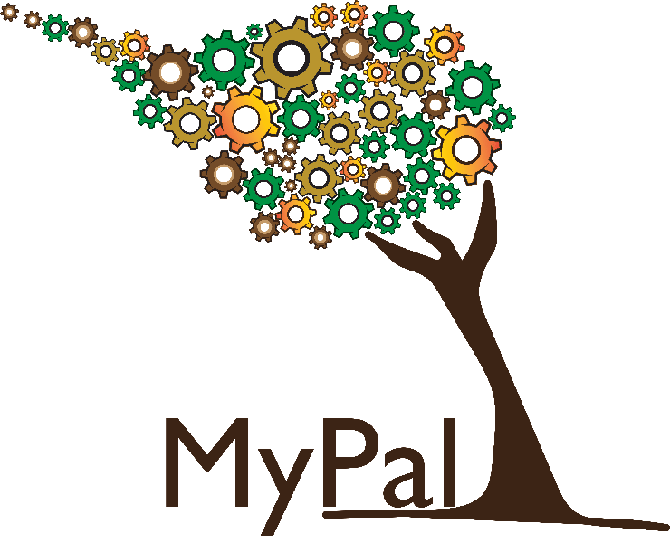
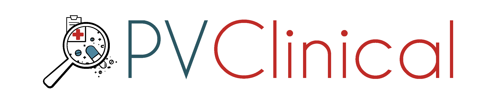
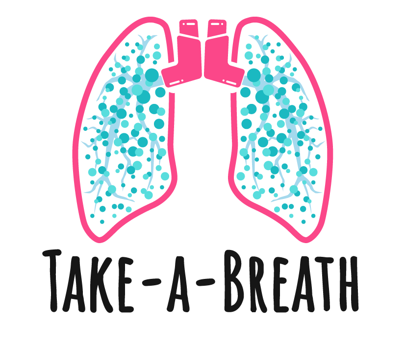
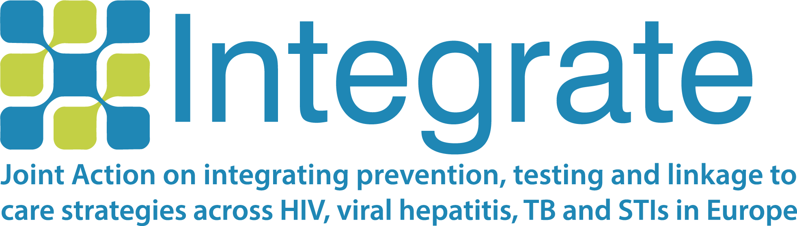
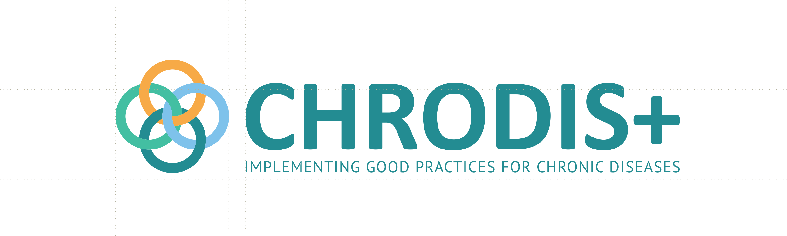

MyPal

MyPal (Fostering Palliative Care of Adults and Children with Cancer through Advanced Patient Reported Outcome Systems)
- Duration: 2019-2022
- Funder: European Union’s Horizon 2020 research and innovation programme
- Description: MyPal is a 42-month European project (2019-2022) that is aiming to foster palliative care for people with cancer by leveraging patient reported outcome (PRO) systems through their adaptation to the personal needs of the person with cancer and his/her caregiver(s).
PVClinical

PVClinical (Active Pharmacovigilance in Clinical environment)
- Duration: 2018-2021
- Funder: Operational Program Competitiveness, Entrepreneurship and Innovation, under the call «RESEARCH – CREATE - INNOVATE»
- Description: PVClinical is a 36-month national project (2018-2021) that developed an advanced computational platform to facilitate and automate the implementation of PV procedures, with particular emphasis on exploring potential ADR signals and focusing on integrating such processes into the clinical environment. Nevertheless, the PVClinical platform is not limited to the clinical environment, as it can be exploited by Contract Research Organizations (CRO) and the pharma industry studying drug safety issues, as well as drug monitoring organizations and regulatory authorities such as the Greek National Medicines Agency (EOF), or the European Medicines Agency (EMA).
PrescIT
PrescIT (A clinical decision support platform for more efficient, safer, standardized and cost-effective online prescribing)
- Duration: 2020 - 2023
- Funder: Operational Program Competitiveness, Entrepreneurship and Innovation, under the call «RESEARCH – CREATE - INNOVATE»
- Description: PrescIT is a 30-month national project (2020 - 2023) The purpose of PrescIT is to implement, evaluate and disseminate a comprehensive clinical decision support platform. The platform is aimed at all health care providers, from primary care to tertiary hospitals. PrescIT's broader goal is to improve the quality of health services, increase productivity and safety.
Clinical Network/Registry of Patients with Chronic Pulmonary Conditions
- Description: This network includes more than 15 clinical laboratories across Greece focusing on patients with chronic pulmonary conditions and especially the ones on home ventilation support. The project includes clinical data collection for patients via a web platform hosted by INAB|CERTH (currently it holds data for about 3000 patients).
Take-a-breath

Take-a-breath: Smart Platform for Self-management and Support of Patients with Chronic Respiratory Diseases
- Duration: 2018-2022
- Funder: Operational Program Competitiveness, Entrepreneurship and Innovation, under the call «RESEARCH – CREATE - INNOVATE»
- Description: The Take-A-Breath system is based on the adoption of innovative software technologies (virtual and augmented reality, clinical decision making) and hardware (wireless personal bio-monitoring system) to implement a range of advanced sophisticated self-management services for patients with chronic respiratory diseases able to radically change the way they treat themselves and adhere with the doctors’ prescriptions. With the Take-A-Breath system, "regular monitoring" is transformed into "personalized monitoring" in real time, the proper use of the inhaler device is controlled in an innovative way, while the system offers to the patient a series of instructions in order to avoid asthma exacerbations and emergency situations.
INTEGRATE Joint Action

INTEGRATE: Joint Action on integrating prevention, testing and linkage to care strategies across HIV, viral hepatitis, TB and STIs in Europe
- Duration: 2017-2021
- Funder: 3rd EU Health Programme
- Description: The main objective of INTEGRATE was to integrate early diagnosis and linkage to prevention and care of HIV, viral hepatitis, TB and STIs in EU member states. INTEGRATE focused on how effective tools for diagnosis and linkage to care in one disease area can be used in others. This was done through the review of existing tools followed by adaption and piloting of the tools in other disease areas. Further, INTEGRATE focused on capacity building and knowledge sharing among the partners the identification of best practices in testing and linkage to care and efforts to improve sustainability at the national level through policy development.
CHRODIS+ Joint Action

CHRODIS+: Implementing good practices for chronic diseases
- Duration: 2017-2020
- Funder: European Commission, in the framework of the Health Programme (2014-2020)
- Description: The CHRODIS+ Joint Action raised awareness that in a health-promoting Europe – free of preventable
chronic diseases, premature deaths and avoidable disabilities – initiatives in regards to chronic diseases
should build on four cornerstones:
- health promotion and primary prevention as a way to reduce the burden of chronic diseases patient empowerment
- tackling functional decline and quality of life as the main consequences of chronic diseases
- making health systems sustainable and responsive to the ageing of our populations associated with the epidemiological transition
DM4ALL
DM4ALL: Type II Diabetes Mellitus Self-Management Platform for all - ProEmpower PCP
- Duration: 2017-2020
- Funder: European Commission Horizon 2020
- Description: DM4all digital platform is a novel mHealth system dedicated to the effective management of Type 2 Diabetes
Mellitus (T2DM). The platform includes web and mobile interfaces along with intelligent medical devices, able to
support all the diverse needs of the T2DM care pathway.
DM4all is developed based on the Shared Care Plan, a shared “document” that includes information about lifestyle, treatment plan
activities, and disease-related markers. Furthermore, collects information and feedback from the patients
through validated questionnaires aiming to increase impact and personalization. The overall objective of the
platform is to encourage:
- patients and involved actors to adopt best practices in disease management,
- patients to increase the adherence in the treatment plan,
- and all actors to improve their quality of life.
KONFIDO
KONFIDO: Secure and Trusted Paradigm for Interoperable eHealth Services
- Duration: 2017-2020
- Funder: European Commission Horizon 2020
- Description: KONFIDO leverages proven tools and procedures, as well as novel approaches and cutting edge technology, in view of creating a scalable and holistic paradigm for secure inner- and cross-border exchange, storage and overall handling of healthcare data in a legal and ethical way both at national and European levels.